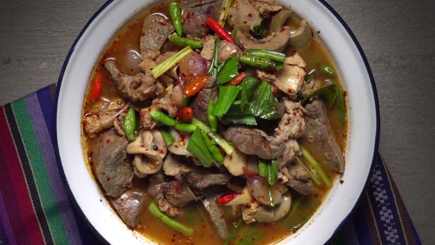

Hello World!!!
go to footer
ยินดีต้อนรับสู่เว็บเพจของฉัน
รายการอาหารที่ชอบ
- WEB ICT
- ส้มตำ
- ลาบหมู
- ต้มแซ่บ

The 1838 Jesuit slave sale was agreed to on June 19 when the Maryland province of the Society of Jesus entered into a contract to sell 272 slaves to two Louisiana planters for $115,000. This was the culmination of a long-running debate among the Jesuits over whether to keep, sell, or manumit their slaves. In 1836, the Jesuit superior general authorized the sale on three conditions: the slaves must be permitted to practice their Catholic faith, the families must not be separated, and the proceeds must only be used to support Jesuits in training. It soon became clear that the conditions had not been met; the new owners separated families and did not allow most of the slaves to carry on their faith. The Jesuits were only partially paid, many years late. For humanitarian reasons, only 206 slaves were delivered. Many Jesuits were outraged by the sale, and the superior general removed the provincial superior for disobeying orders and promoting scandal, exiling him to Nice for several years. (Full article...)
Recently featured: Frank Russell, 2nd Earl RussellBattle of St. CharlesOlive Morris
ArchiveBy emailMore featured articles
Did you know ...
The nova on the Juneteenth flag
The nova on the Juneteenth flag
... that on the Juneteenth flag, designed by Ben Haith to celebrate freedom and the end of slavery in the United States, the nova (pictured) represents a new beginning for all?
... that ancient Roman surgeons used materials such as bran and ashes to heal burns?
... that Joseph Ranger was the longest-serving Black sailor in the American Revolutionary War's Virginia State Navy?
... that the Suwałki Gap is often described as the modern version of the Cold War–era Fulda Gap, a NATO vulnerability of historical importance?
... that Stanford women's basketball player Cameron Brink is a close family friend of Stephen Curry?
... that a Japanese-era building in the Imperial Crown Style serves as the regional museum of Russia's Sakhalin Oblast?
... that Emma Watson considered quitting the Harry Potter film series, but later returned to star in Harry Potter and the Half-Blood Prince?
... that George Henry Daniels has been called the "Father of the Century"?
ArchiveStart a new articleNominate an article
In the news
Stephen Curry in 2017
Stephen Curry
In basketball, the Golden State Warriors defeat the Boston Celtics to win the NBA Finals (MVP Stephen Curry pictured).
Former Bolivian president Jeanine Áñez is sentenced to ten years in prison on charges related to her succession to office during the 2019 political crisis.
Voters in Kazakhstan pass 56 constitutional amendments in a referendum, following the January 2022 unrest.
In Nigeria, at least 40 people are killed in an attack at a Catholic church in Owo, Ondo State.
Ongoing: COVID-19 pandemicRussian invasion of Ukraine
Recent deaths: Jean-Louis TrintignantIvonne HazaBilly KametzRoman BunkaPhil BennettJim Ryan
Nominate an article
On this day
June 19: Juneteenth in the United States (1865)
Julian Assange
Julian Assange
1846 – The first officially recorded baseball game in U.S. history using modern rules was played in Hoboken, New Jersey, with the "New York Nine" defeating the New York Knickerbockers 23–1.
1867 – Second French intervention in Mexico: Emperor Maximilian I of Mexico was executed by firing squad in Querétaro City.
1965 – Nguyễn Cao Kỳ, the head of the South Vietnam Air Force, was appointed prime minister at the head of a military regime, ending two years of short-lived military juntas.
1970 – The international Patent Cooperation Treaty was signed, providing a unified procedure for filing patent applications to protect inventions in each of its contracting states.
2012 – Facing allegations of sexual assault in Sweden, Julian Assange (pictured), the founder of WikiLeaks, requested asylum at the Ecuadorian embassy in London.
Guru Hargobind (b. 1595)Sarah Rosetta Wakeman (d. 1864)Aage Bohr (b. 1922)
More anniversaries: June 18June 19June 20
ArchiveBy emailList of days of the year
Today's featured picture
The Hunting of the Snark
The Hunting of the Snark is a nonsense poem by the English writer Lewis Carroll, telling the story of ten characters who cross the ocean to hunt a mysterious creature known as the Snark. The poem was published in 1876 with illustrations by Henry Holiday. This is the sixth plate from Holiday's illustrations, depicting the search for the snark planned in "Fit the Fourth" and commencing in "Fit the Fifth":
They sought it with thimbles, they sought it with care;
They pursued it with forks and hope;
They threatened its life with a railway-share;
They charmed it with smiles and soap.
Illustration credit: Henry Holiday; restored by Adam Cuerden
Recently featured: Arthur Wellesley, 1st Duke of WellingtonBolungarvíkOdd-eyed cat
อาหารที่ไม่ชอบ
| Name |
email |
| Thammarat |
dasfjkdsfjk@gmaol/col |